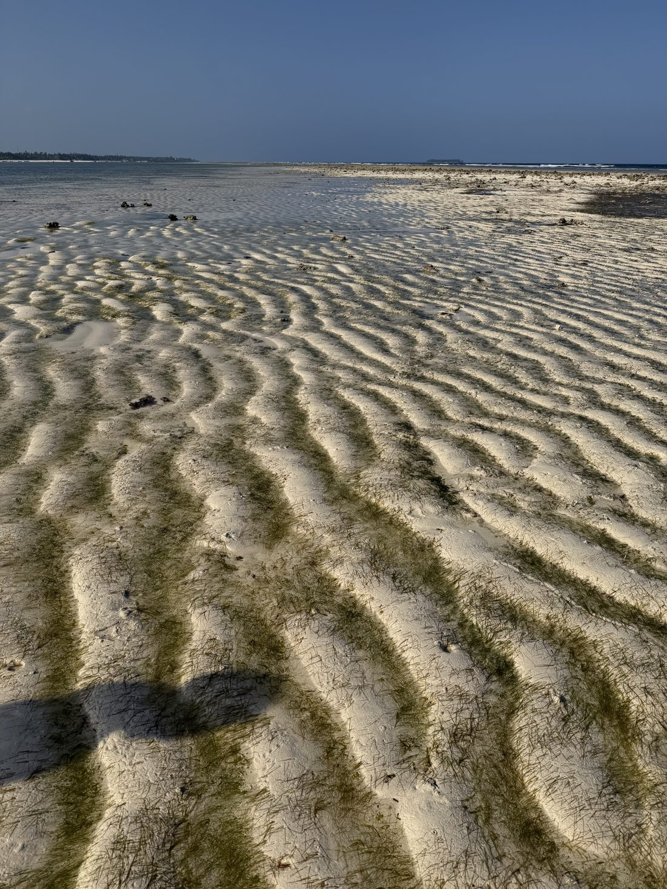
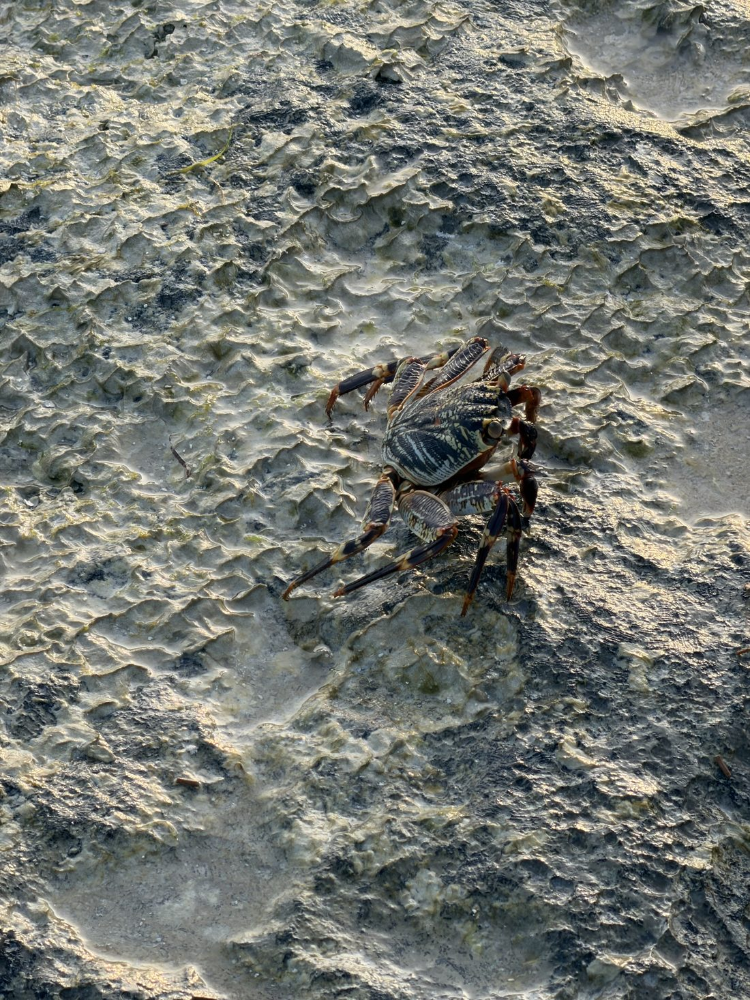
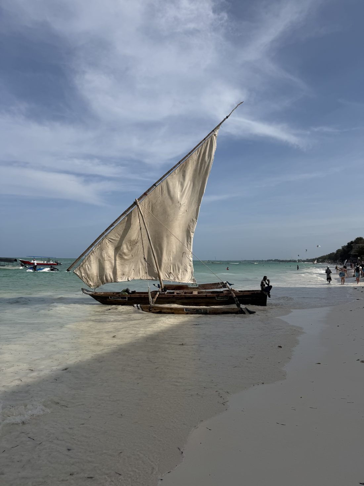
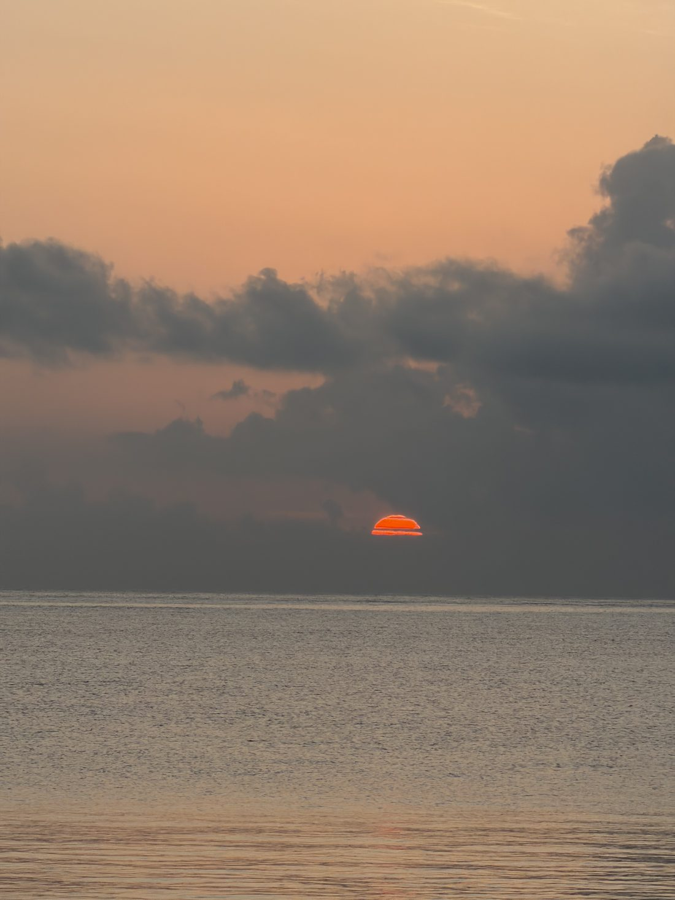
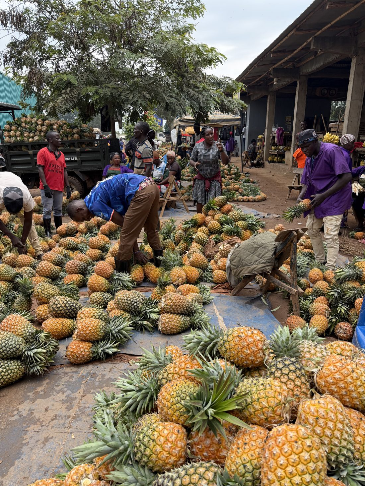
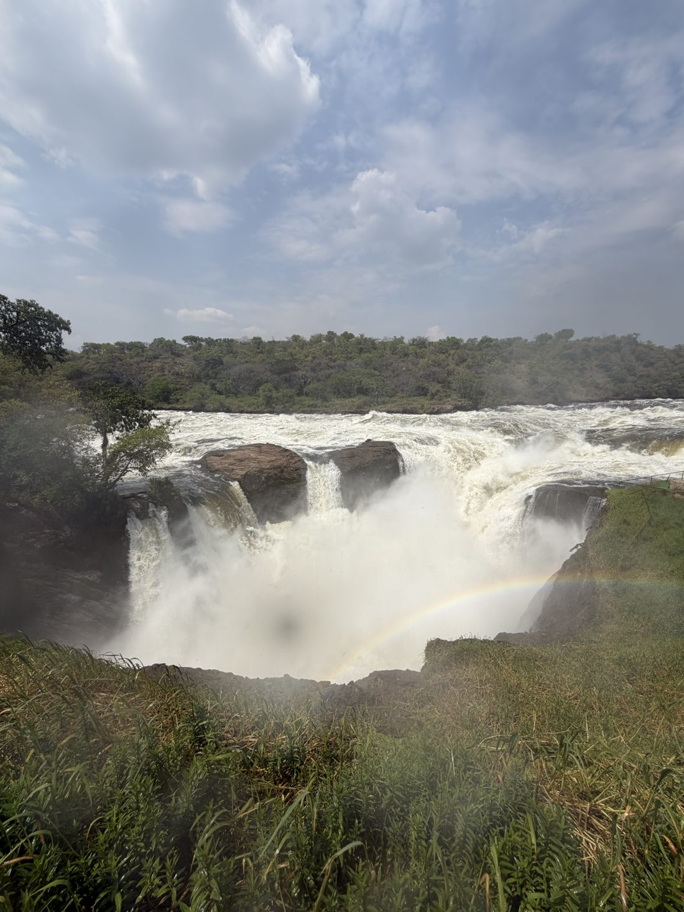
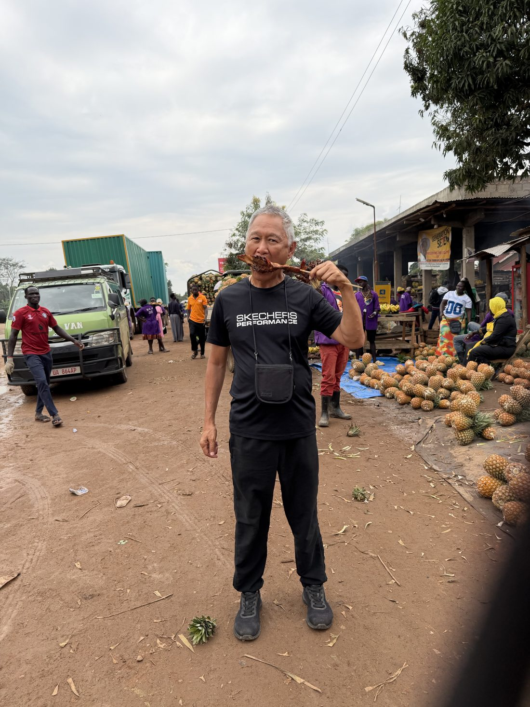
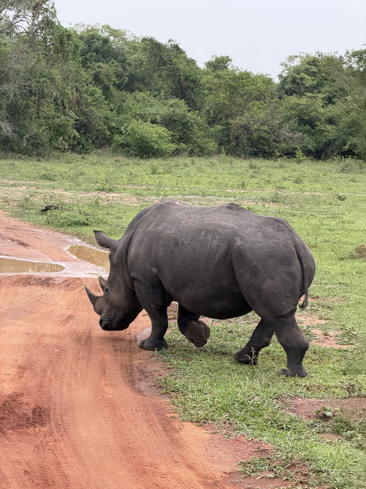
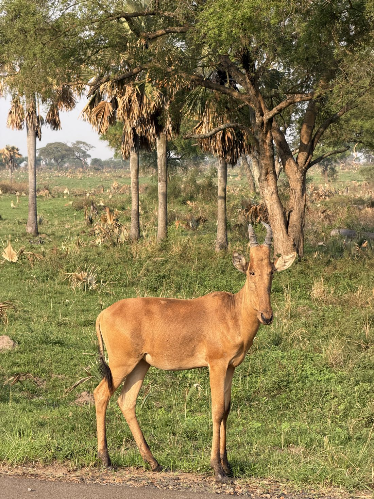
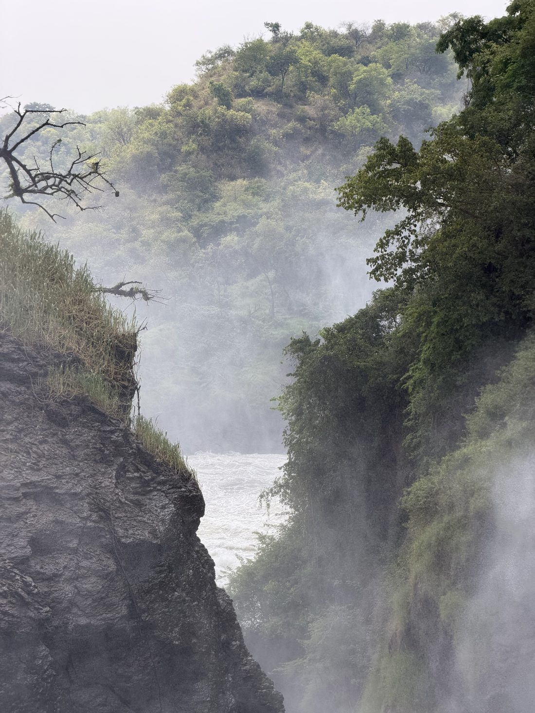

Twenty-seven days across Zanzibar, Tanzania, Kenya and Uganda — beaches and lions and waterfalls, and a quiet lesson in just how fortunate a life can be.二十七天横跨桑给巴尔、坦桑尼亚、肯尼亚和乌干达——海滩、狮子、瀑布，以及一堂关于生命有多幸运的静默课程。
I have been fortunate to travel a great deal these past few years, and every trip leaves a mark. But East Africa marked me in a way I did not expect. I went for the beaches and the safari — and I came home thinking, more than anything, about how lucky we are.
Twenty-seven days carried me from the white sands of Zanzibar, across the great plains of Tanzania and Kenya, and up into the wild green heart of Uganda. I saw some of the most beautiful sights of my life. I also saw the hardest living conditions I have ever witnessed anywhere in my travels — and I want to tell you about both, honestly, because they belong together. The beauty and the hardship were never far apart, and somehow that is the whole story.
"I went looking for lions and sunsets. What I brought home was gratitude — for clean water, a solid roof, and a life I had quietly taken for granted."
I began with ten slow days in Zanzibar, and I could happily have stayed a month. The water there is a colour I struggle to describe — somewhere between turquoise and glass. I learned to kite surf in the warm wind, fell off more times than I'd like to admit, and laughed every single time. There was a lovely pool to ease the aches afterward, and long evenings doing very little but watching the light change.
The magic happened at low tide. The sea would draw far, far back, leaving a vast plain of rippled wet sand, and I could walk right out across it — an old man wandering where the ocean had been an hour before. Out there, through water so clear it was almost invisible, I could see beautiful corals, little fish darting, a whole quiet world laid open at my feet.


I took boat rides on the traditional dhows — those graceful old sailing boats with their single curved sails — gliding across turquoise water that didn't look quite real. And the sunsets. Oh, the sunsets. Each evening the whole sky would catch fire over the ocean, and I'd just stand there, grateful to be exactly where I was.


From the sea I turned inland to Tanzania, and to the safari I had dreamed about for years. The heart of it was the Ngorongoro Crater — that vast, ancient bowl in the earth where the wildlife roams entirely free. There is no fence. There is no enclosure. You simply drive down into it and find yourself sharing the floor of the world with whatever happens to be there that morning.
It is one of the only places left on this earth where you can see animals living exactly as they always have — herds grazing to the horizon, predators dozing in the grass, birds wheeling overhead. I sat in the open vehicle, the engine off, the great quiet of the plains all around, and felt very small and very lucky. No zoo, no documentary, prepares you for it. This is their home, and you are only a guest passing through.

Between the game drives, the road carried me past everyday life — roadside markets, fruit stacked bright on wooden tables, children waving as we passed. The people met us with a warmth that I will carry for the rest of my days. They had so little, and yet they smiled so freely.
Five days in Kenya gave me a great deal to think about. I learned that Kenya's leader had once visited Singapore and came home promising to make Kenya like Singapore one day. It is a beautiful ambition, and I hope with all my heart it comes true. But — and I say this gently, as one traveller's honest observation, not as any kind of judgement — I think it may take rather longer than twenty years.
What I noticed, simply driving around, was that the development seemed gathered in the places where the wealthy already are. Around the high-end restaurants and the spas, the roads were smooth and well kept. But turn toward where the ordinary and the poor live, and those same roads turned rough and broken. Progress was real — but it had not yet reached everyone evenly. I offer that only as something I saw with my own eyes, and it stayed with me.
"The smooth roads led to the spas. The rough ones led to where most people actually live. I am no expert — but a man notices these things from the back of a car."
Getting into Uganda taught me a small lesson in how the world works. At the border they required a yellow fever card — the famous "yellow card." I did not have one. Happily, it turned out you could obtain one right there on arrival, for a fee. I paid, I got my card, and in I went. I'll only say, with a wry smile, that the requirement seemed more flexible than I'd been led to believe. A traveller learns to roll with these things.
Uganda also handed me my first real misfortune in four years of travel: food poisoning. Four years criss-crossing the planet, eating whatever the locals eat, and never once a bad stomach — until Uganda. It laid me low for a day or two. But even that I can almost smile about now, because what Uganda gave me far outweighed one rough night.
Because Uganda gave me Murchison Falls — and I will say it plainly, it is the most powerful waterfall in the world. The entire Nile is forced through a gap in the rock barely a few metres wide, and it comes through with a fury you feel in your chest before you even see it. The roar, the spray, the sheer violence of all that water — I have stood before many great sights, and few have humbled me like this one.

And the wildlife! Uganda was alive with it. I watched rhinos moving slowly through the bush, hippos wallowing in the river, and antelope grazing across the open ground. Every drive felt like a gift.



Now I come to the part of this journey that mattered most, and I want to choose my words with care. As we travelled through East Africa, I passed through some very poor areas — places where the hygiene was poor, the housing very basic, broken, makeshift. In all my years of travel, across many countries, these were the hardest living conditions I have ever seen.
I do not write that to look down on anyone — God forbid. I write it because it humbled me to my core. These are people doing their utmost with almost nothing, raising children, getting through each day, and — this is the part that undoes me — still smiling so warmly at a stranger passing through. A child in a village would catch my eye and grin, and I would have to look away to gather myself.

I came home to Singapore and looked at my life with new eyes. The clean water from the tap. The solid roof. The hospital down the road. The simple, enormous luxury of never once having to wonder whether tonight there will be enough. We have so much — and we so easily forget it. I had forgotten it.
"They had the least of anyone I have met, and they gave me the warmest smiles I have ever received. I will never again take a glass of clean water for granted."
From Zanzibar's tides to Uganda's falls — beaches, beasts, and the faces I carried home.
Twenty-seven days. Four countries. The clearest water and the hardest poverty I have ever set eyes on, often within the same day's drive. East Africa is a place of staggering beauty and staggering need, side by side, and it does not let you look away from either.
I went for the lions and the beaches and the great waterfall, and I found all of them, more wonderful than I had hoped. But the thing I carried home was none of those. It was a quiet, almost embarrassing realisation of how fortunate we are — those of us who turn a tap and clean water comes, who sleep under a roof that keeps out the rain, who have never truly gone without. We did nothing to deserve it. We were simply born where we were born.
"Travel is supposed to show you the world. This one showed me my own good fortune — and I have not stopped feeling grateful since."
So I came home, hugged my wife a little tighter, drank a glass of cold water, and gave thanks. If this old traveller can leave you with one thought, let it be this: count your blessings — they are far greater than you think. 🌍🙏